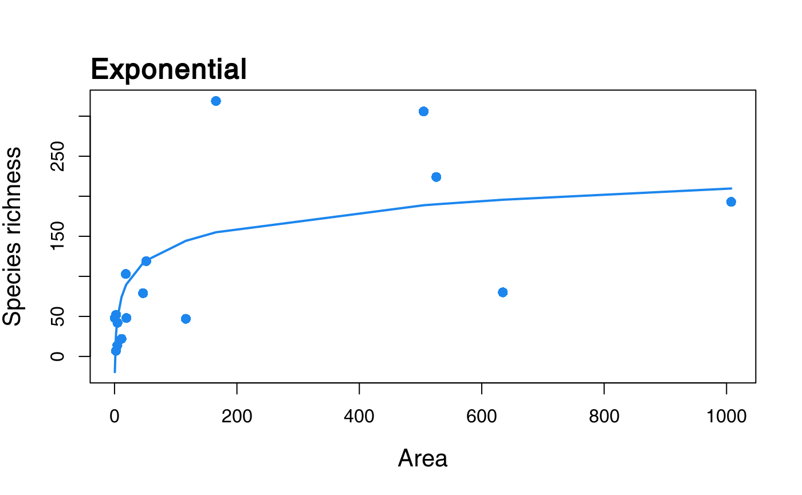

fit and compare Species-Area Relationship (SAR) models using multi-model inference
sars provides functionality to fit twenty SAR model using non-linear regression, and to calculate multi-model averaged curves using various information criteria. The software also provides easy to use functionality to plot multi-model SAR curves and to generate confidence intervals using bootstrapping.
Installation
You can install the released version of sars from CRAN with:
install.packages("sars")And the development version from GitHub with:
# install.packages("devtools")
devtools::install_github("txm676/sars")Example usage
Basic usage of sars will result in using two types of functions:
To fit the power sar model (Arrhenius 1921) to the ‘galapagos’ (Preston 1962) data set:
fit_pow <- sar_power(data = galap)Attempting to fit all 20 sar models to the ‘galapagos’ (Preston 1962) data set and get a multi-model SAR:
mm_galap <- multi_sars(data = galap)
#> ● multi_sars: multi-model SAR
#> ● opt. | sig. : model
#> → ✔ | ✔ : sar_power
#> → ✔ | ✔ : sar_powerR
#> → ✔ | ✔ : sar_epm1
#> → ✔ | ✔ : sar_epm2
#> → ✔ | ✔ : sar_p1
#> → ✔ | ✔ : sar_p2
#> → ✔ | ✔ : sar_expo
#> → ✔ | ✔ : sar_koba
#> → ✔ | ✔ : sar_mmf
#> → ✔ | ✔ : sar_monod
#> → ✔ | ✔ : sar_negexpo
#> → ✔ | ✖ : sar_chapman
#> → ✔ | ✔ : sar_weibull3
#> → ✔ | ✔ : sar_asymp
#> → ✔ | ✔ : sar_ratio
#> → ✔ | ✔ : sar_gompertz
#> → ✔ | ✔ : sar_weibull4
#> → ✔ | ✖ : sar_betap
#> → ✔ | ✔ : sar_helegMost of ‘fitted’ objects have corresponding plot methods:
to fit the exponential SAR model (Gleason 1922) to the ‘galapagos’ data set and plot it
fit_expo <- sar_expo(data = galap)
plot(fit_expo)
Troubleshoutting
If, despite the :heart: brought during the programming of this R :package: and writing of this documentation, you have difficulties to install or run sars, if you have questions about the procedures or calculations, or if you want to report bugs :beetle:, do not hesitate to connect with us on GitHub.
References
Arrhenius, Olof. 1921. “Species and Area.” The Journal of Ecology 9 (1). British Ecological Society: 95. doi:10.2307/2255763.
Gleason, Henry Allan. 1922. “On the Relation Between Species and Area.” Ecology 3 (2). Ecological Society of America: 158–62. doi:10.2307/1929150.
Preston, F. W. 1962. “The Canonical Distribution of Commonness and Rarity: Part I.” Ecology 43 (2). Ecological Society of America: 185. doi:10.2307/1931976.